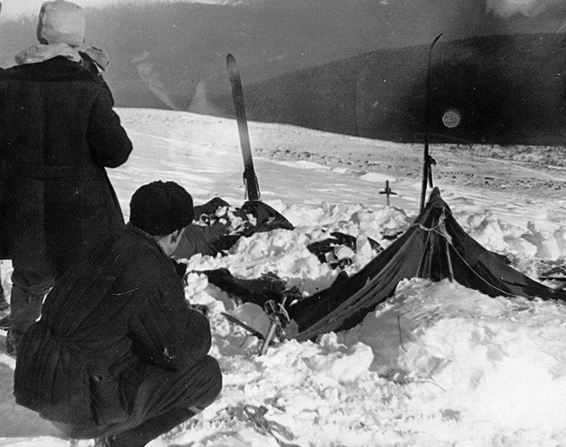
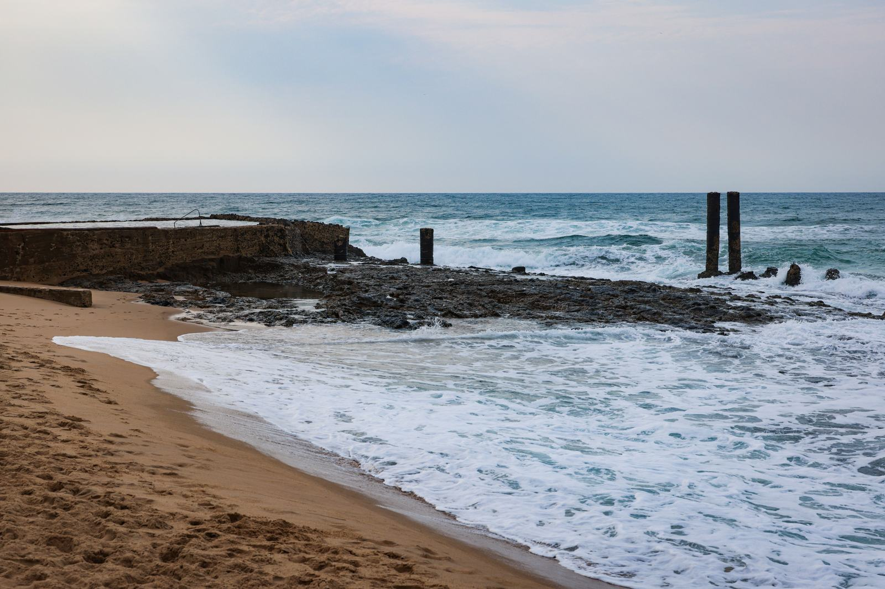
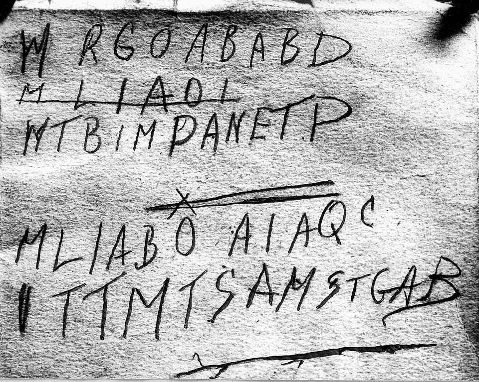
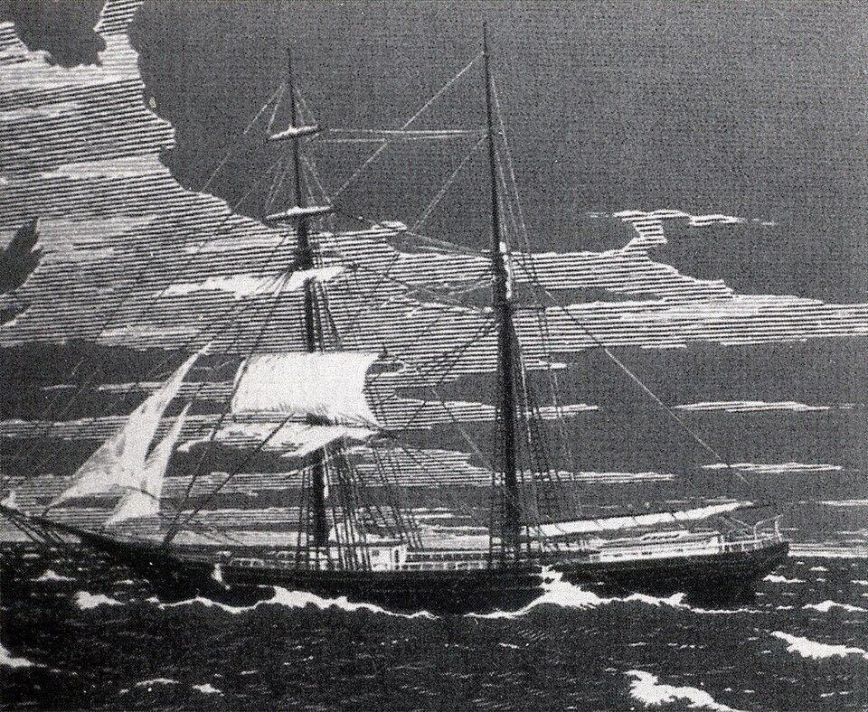

Esta sección va más a fondo que el catálogo de
Casos. Cada expediente reconstruye la
cronología completa, las pruebas recopiladas y el estado actual
de la investigación.
Expediente N.º 001 — El incidente del Paso Dyatlov
Datos del caso
Fecha: entre el 1 y el 2 de febrero de 1959. Ubicación: ladera
del Kholat Syakhl (que en lengua mansi significa "Montaña de
los Muertos"), norte de los montes Urales, Unión Soviética.
Víctimas: nueve integrantes de un grupo de esquí liderado por
Ígor Dyatlov, estudiantes y graduados del Instituto Politécnico
de los Urales. Estado: cerrado en 1959 como "fuerza natural
irresistible", reabierto en 2019 por la fiscalía rusa.
Cronología
El grupo partió el 27 de enero desde la ciudad de Ivdel con
destino al monte Otorten. La última fotografía del campamento
data del 1 de febrero. Esa noche, algo los obligó a cortar la
tienda desde dentro y huir ladera abajo, sin abrigo y sin
calzado. Los primeros cuerpos fueron encontrados el 26 de
febrero a unos 1500 metros de la tienda, junto a los restos de
una fogata improvisada bajo un cedro. Los últimos cuatro
aparecieron recién en mayo, enterrados bajo cuatro metros de
nieve en un barranco.

El campamento tal como lo encontró el equipo de rescate, 26 de febrero de 1959.
Evidencia forense
Dos víctimas presentaban fracturas de cráneo, dos tenían
fracturas de tórax con una fuerza comparable a la de un
accidente vehicular, pero sin heridas externas. Una de las
víctimas no tenía lengua ni parte del labio, aunque la
descomposición en agua pudo ser la causa. Tres prendas de ropa
dieron positivo en pruebas de radiactividad. La piel de algunos
cuerpos presentaba una coloración anaranjada oscura.
Lo que no cierra
Si fue una avalancha, ¿por qué no hay rastros de una? El terreno
tiene una pendiente menor a 20 grados, insuficiente para generar
un alud. Si fue un ataque, ¿de quién, y por qué la tienda fue
rasgada desde adentro? ¿Por qué las autoridades soviéticas
cerraron la zona a excursionistas durante tres años?
Expediente N.º 002 — El hombre de Somerton (Tamám Shud)
Datos del caso
Fecha: 1 de diciembre de 1948. Ubicación: playa de Somerton,
Adelaida, Australia del Sur. Víctima: hombre sin identificar,
entre 40 y 45 años, 180 cm, complexión atlética. Estado: la
identidad fue parcialmente resuelta en 2022 por ADN; las
circunstancias de la muerte siguen abiertas.
Cronología
La noche anterior, varios testigos vieron a un hombre recostado
contra el muro del paseo marítimo. Parecía dormido. A la mañana
siguiente estaba muerto en la misma posición, con un cigarrillo
a medio consumir apoyado en la solapa del saco. No tenía
documentos. Todas las etiquetas de su ropa habían sido
arrancadas deliberadamente. En su bolsillo apareció un boleto
de tren sin usar y un peine americano.

La playa de Somerton, Adelaida. El cuerpo fue hallado junto al muro del paseo marítimo.
El código sin descifrar
Meses después, la policía encontró un bolsillo secreto cosido
dentro de los pantalones del hombre. Contenía un pequeño
fragmento de papel impreso con las palabras "Tamám Shud",
arrancado de la última página de un ejemplar de los Rubaiyat de
Omar Khayyam. Cuando apareció ese ejemplar en el asiento trasero
de un auto estacionado cerca de la playa, la contratapa tenía
escritas a mano cinco líneas de letras mayúsculas, aparentemente
un código. Una de las líneas estaba tachada, como si fuera un
borrador. Ningún criptógrafo lo descifró.

El código hallado en la contratapa del libro. La segunda línea está tachada.
Lo que no cierra
La autopsia encontró un bazo agrandado y sangre congestionada en
el estómago, consistente con envenenamiento, pero los análisis
toxicológicos de la época no detectaron ningún veneno conocido.
Una enfermera local reconoció al hombre pero se negó a hablar
más. ¿Quién le arrancó las etiquetas de la ropa? ¿Qué dice el
código? ¿Por qué llevaba un libro de poesía persa?
Expediente N.º 003 — El Mary Celeste
Datos del caso
Fecha del hallazgo: 4 de diciembre de 1872. Ubicación: océano
Atlántico, entre las islas Azores y la costa de Portugal.
Embarcación: bergantín Mary Celeste, matrícula estadounidense.
Desaparecidos: 10 personas (capitán Benjamin Briggs, su esposa
Sarah, su hija Sophia de dos años y siete tripulantes). Estado:
abierto, sin resolución.
Estado del barco al momento del hallazgo
El Dei Gratia, otro bergantín, avistó al Mary Celeste navegando
erráticamente con las velas parcialmente desplegadas. Al
abordarlo, encontraron la carga de 1701 barriles de alcohol
industrial prácticamente intacta (solo nueve estaban vacíos), los
objetos personales en su lugar, reservas de comida y agua para
seis meses, y la bitácora con la última entrada datada el 25 de
noviembre. No había signos de violencia ni de tormenta severa. El
único bote salvavidas faltaba, y algunas cuerdas estaban cortadas.

Grabado publicado en la prensa de la época tras el hallazgo del Mary Celeste.
Lo que no cierra
Si la tripulación abandonó el barco voluntariamente, ¿por qué no
llevaron las provisiones? Si fue por miedo a una explosión de los
vapores de alcohol, ¿por qué no regresaron cuando vieron que el
barco seguía a flote? ¿Cómo desapareció un bote con diez
personas, incluyendo una bebé, sin dejar rastro en una de las
rutas marítimas más transitadas del siglo XIX?